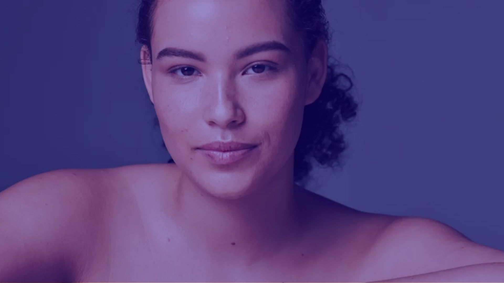
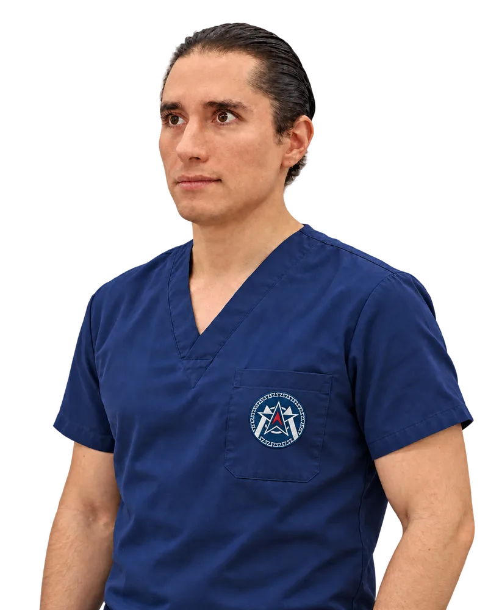
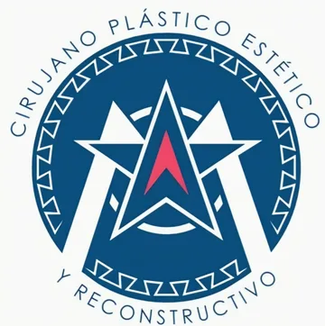
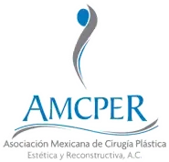
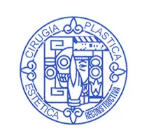
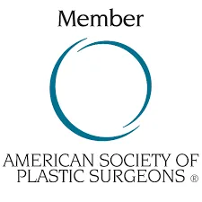
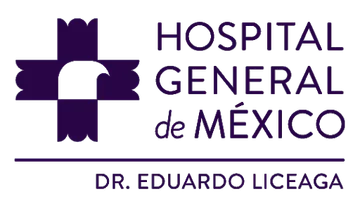
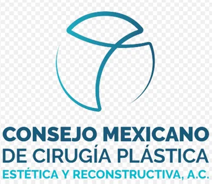

Una trayectoria
que puedes conocer.
21años de trayectoria como médico cirujano
Conoce las etapas de su formación y desarrollo profesional.
Conoce su trayectoria

El Dr. Tony Bustos te acompaña hacia tu mejor versión,
con atención cercana y enfocada en tu bienestar.
Formación sólida, visión internacional. Médico formado en la UNAM, el Dr. Tony Bustos complementó su preparación en cirugía plástica y reconstructiva con entrenamiento especializado en Taiwán, Japón, Estados Unidos, España y Turquía.
Preparación que trasciende fronteras. Su formación incluye microcirugía reconstructiva en el Chang Gung Memorial Hospital, reconstrucción auricular con el Dr. Satoru Nagata en Japón y cirugía estética y reconstructiva en la Clínica Planas de Barcelona.
Conoce las etapas de su formación y desarrollo profesional.
Conoce su trayectoria






Resuelve tus dudas antes de tu consulta
con el Dr. Tony Bustos.
Puedes compartir tus objetivos y dudas con el Dr. Tony Bustos, y preguntar por las opciones, sus alcances, riesgos y cuidados. La consulta es el espacio para recibir información sobre tu caso antes de tomar una decisión.
Solicita al consultorio las indicaciones específicas para tu procedimiento y confirma cualquier duda con el Dr. Tony Bustos. La preparación se define de manera individual; esta página no sustituye esas instrucciones.
Pregunta durante la valoración por el tiempo estimado de recuperación, el seguimiento y el regreso a tus actividades. No se establece un plazo único aquí: necesitarás una orientación específica para el procedimiento y tu situación.
Consulta la ubicación en Hospital San Ángel Inn Universidad y el horario de atención, de lunes a viernes de 9:00 a. m. a 6:00 p. m., en la sección de contacto. Escríbenos por WhatsApp al 55 7946 8246 para solicitar tu consulta.
Ver información de contactoDR. TONY BUSTOS
Da el siguiente paso.
Conoce dónde encontrarnos.